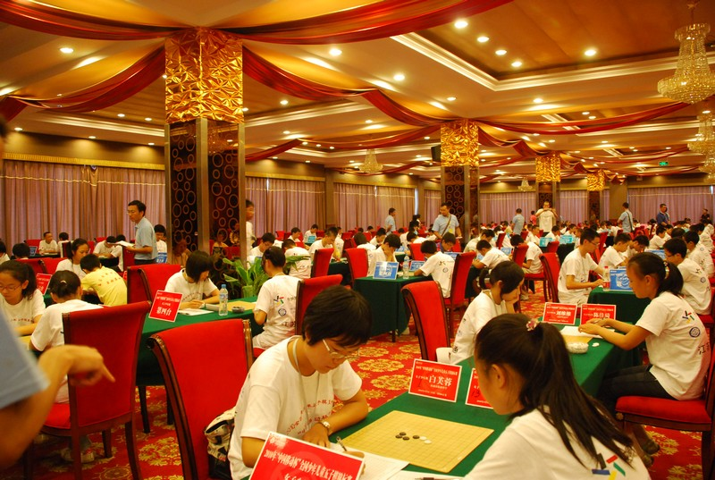
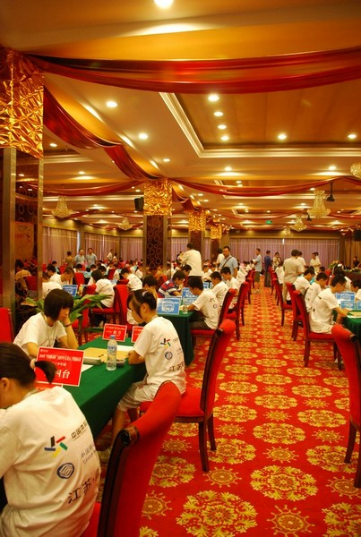
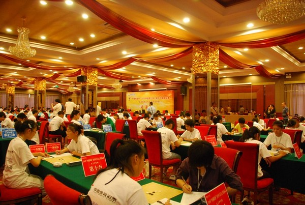
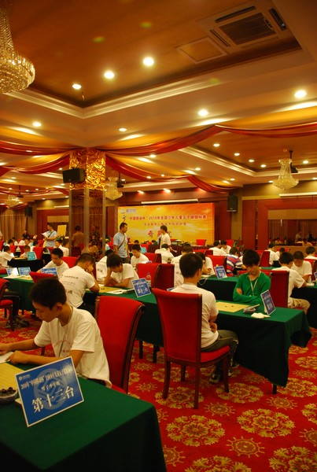
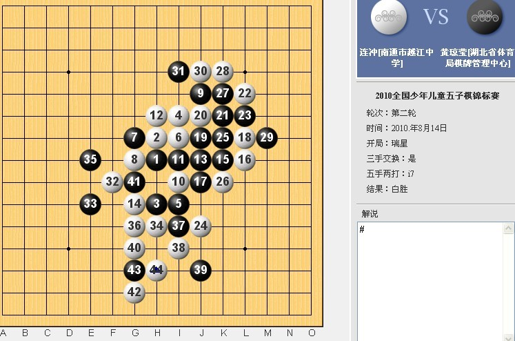
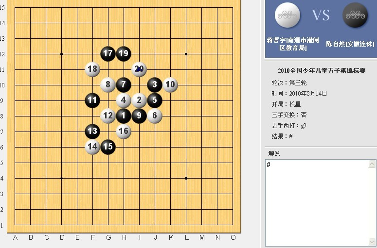
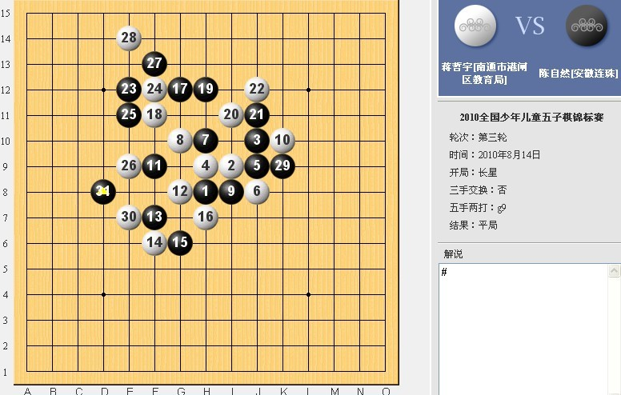

全国青少赛，赛场直播
首页
少儿五子棋
#1 全国青少赛，赛场直播 作者：1 发表时间：2010-8-14 14:30:10
第一轮比赛即将结束
#2 Re:全国青少赛，赛场直播 作者：有志青年 发表时间：2010-8-14 14:39:36
第一轮比赛现场，此次比赛150名选手同时对局。


［ 无尽 于 2010-8-14 14:56:37 时奖励此帖[金币加 20 威望加1］
#3 Re:全国青少赛，赛场直播 作者：有志青年 发表时间：2010-8-14 14:43:11


#4 Re:全国青少赛，赛场直播 作者：1 发表时间：2010-8-14 15:20:32
现在第二轮开始喽
#5 Re:全国青少赛，赛场直播 作者：1 发表时间：2010-8-14 15:36:59
刚刚获悉，由于明天，2010年8月15日将举行全国哀悼活动，停止公共娱乐活动，所以本次赛程作了重大调整，即：明天停赛一天，并将原本明天的赛事（共三轮），压缩进今天和后天的赛程。具体的是：今天下午加赛一轮，后天一天加赛两轮。不知道，这样的改变，是否会影响到选手的发挥？［此帖子已被 1 在 2010-8-14 15:39:36 编辑过］
#6 Re:全国青少赛，赛场直播 作者：狠角色的软弱 发表时间：2010-8-14 15:44:48
对于少年组,45分钟少了点.
#7 Re:全国青少赛，赛场直播 作者：1 发表时间：2010-8-14 16:03:19
截于网路直播1
［此帖子已被 1 在 2010-8-14 16:04:53 编辑过］
［此帖子已被 1 在 2010-8-14 16:05:47 编辑过］
［此帖子已被 1 在 2010-8-14 16:07:12 编辑过］
［ 掌棋宣传员 于 2010-8-14 16:16:11 时花20金币送鲜花一朵］
#8 Re:全国青少赛，赛场直播 作者：掌棋宣传员 发表时间：2010-8-14 16:16:50
 黄琼莹这就输了一盘???
黄琼莹这就输了一盘???
#9 Re:Re:全国青少赛，赛场直播 作者：土豆 发表时间：2010-8-14 16:22:09
引用：
原文由 掌棋宣传员 发表于 2010-8-14 16:16:50 :
黄琼莹这就输了一盘???
都是孩子，没啥可惊讶的……
#10 Re:全国青少赛，赛场直播 作者：狠角色的软弱 发表时间：2010-8-14 16:24:56
45分不够想啊~~前两轮运气好,对手弱, 很快杀了...接下来怎么办 ［ 掌棋宣传员 于 2010-8-14 23:33:59 时花20金币送鲜花一朵］
#11 Re:全国青少赛，赛场直播 作者：1 发表时间：2010-8-14 16:44:49
第二轮结束了。［此帖子已被 1 在 2010-8-14 16:48:01 编辑过］
#12 Re:全国青少赛，赛场直播 作者：浩瀚铭剑 发表时间：2010-8-14 16:50:10
黄琼莹输了？
#13 Re:全国青少赛，赛场直播 作者：1 发表时间：2010-8-14 16:59:31
注意，是黄琼莹赢！因为之前经过交换！！所以黄琼莹最终是执白棋的！！！［此帖子已被 1 在 2010-8-14 17:18:16 编辑过］
#14 Re:全国青少赛，赛场直播 作者：无尽 发表时间：2010-8-14 17:08:46
以前这个直播黑白都是交换前的
#15 Re:Re:全国青少赛，赛场直播 作者：天真o邪 发表时间：2010-8-14 17:15:17
引用：
原文由 1 发表于 2010-8-14 16:03:19 :
截于网路直播1
［此帖子已被 1 在 2010-8-14 16:04:53 编辑过］
［此帖子已被 1 在 2010-8-14 16:05:47 编辑过］
［此帖子已被 1 在 2010-8-14 16:07:12 编辑过］
［ 掌棋宣传员 于 2010-8-14 16:16:11 时花20金币送鲜花一朵］
小黄是黑棋的话绝对不会下成这样 肯定是我师傅嬴了 嘿嘿
#16 Re:全国青少赛，赛场直播 作者：1 发表时间：2010-8-14 17:16:35
第三轮开始喽！（实况截图）
［此帖子已被 1 在 2010-8-14 17:31:16 编辑过］
［此帖子已被 1 在 2010-8-14 17:31:47 编辑过］
#17 Re:全国青少赛，赛场直播 作者：风趣幽默 发表时间：2010-8-14 17:46:16
应该有每轮比赛积分的信息
#18 Re:全国青少赛，赛场直播 作者：1 发表时间：2010-8-14 18:05:03
截于网路直播（第三轮）
［此帖子已被 1 在 2010-8-14 18:05:39 编辑过］
［ 无尽 于 2010-8-14 18:08:23 时奖励此帖[金币加 20 威望加1］
#19 Re:全国青少赛，赛场直播 作者：1 发表时间：2010-8-14 18:07:46
比赛积分的信息，目前裁判组还未公布，等一旦有了，这里随即发布，敬请期待！
#20 Re:Re:全国青少赛，赛场直播 作者：屏蔽 发表时间：2010-8-14 22:58:36
引用：
原文由 狠角色的软弱 发表于 2010-8-14 16:24:56 :
45分不够想啊~~前两轮运气好,对手弱, 很快杀了...接下来怎么办
接下来就是显示实力的时候了。 =w=
还有9楼的帖子是我发的，用错号了……
#21 Re:全国青少赛，赛场直播 作者：深海鱼 发表时间：2010-8-14 23:52:04
= =接下来就是打到熊猫的时刻。。
#22 Re:全国青少赛，赛场直播 作者：水月 发表时间：2010-8-15 11:36:31
=。= 土豆原来是屏蔽呀！！
#23 Re:全国青少赛，赛场直播 作者：自来水 发表时间：2010-8-15 11:54:09
- -我要是再年轻一两岁就好了
［此帖子已被 自来水 在 2010-8-15 11:54:30 编辑过］
#24 Re:Re:全国青少赛，赛场直播 作者：屏蔽 发表时间：2010-8-15 11:57:47
引用：
原文由 深海鱼 发表于 2010-8-14 23:52:04 :
= =接下来就是打到熊猫的时刻。。
踢你……睡睡都去了你还不去哦。
#25 Re:全国青少赛，赛场直播 作者：寂寞的星 发表时间：2010-8-15 12:17:51
顶下。南通加油~棋心愉悦加油~